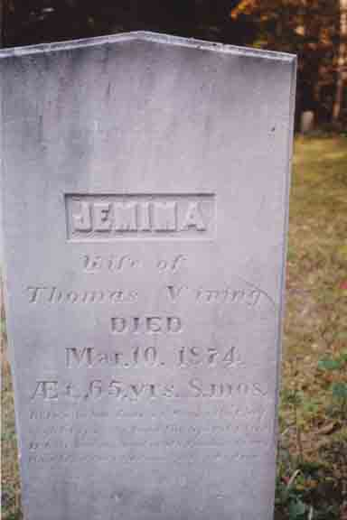

Census Data
| 1830 | 1840 | 1850 | 1860 | 1870 | 1880 | |
| Thomas Vining | M 30–39 | M 40–49 | 50 | 60 | 70 [see note below] |
dead |
| Jemima (Haines) Vining | F 20–29 | F 30–39 | 40 | 52 | 62 [see note below] |
dead |
| Seward Vining | M under 5 | M 10–14 | 23 | married and living in separate household | ||
| Comfort F. Vining | F under 5 | F 10–14 | married and living in separate household [see Marriage Data below] |
|||
| Jemima H. Vining | F 5–9 | 17 | [living? in separate household] | |||
| Thomas Vining | M 5–9 | 15 | living in separate household | |||
| Sarah R. B. Vining | F under 5 | 12 | 22 | married and living in separate household | ||
| Frederick Augustus Vining | 7 | 17 | married and living in separate[?; see note below] household |


Marriage Data
Marriage of Comfort F. Vining (from Lowell, Massachusetts, Marriages - 1841–1915, page 287):
Death Data
Gravestones for Thomas Vining and Jemima Haines, in Mount Blue Cemetery, Avon, Franklin County, Maine: